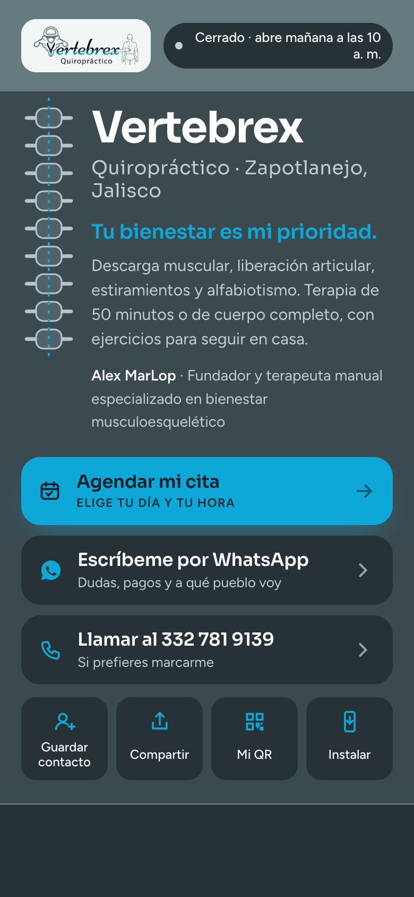

Terapia Superior
De cadera a espalda
50 min$800MXN
Quiropráctico · Zapotlanejo, Jalisco
Solo con cita previa
Tu bienestar es mi prioridad.
Descarga muscular, liberación articular, estiramientos y alfabiotismo.
Alex MarLopFundador y terapeuta manual
De cadera a espalda
50 min$800MXN

De cadera a piernas
50 min$800MXN

Cuerpo completo
1 h 20 min$1,500MXN


Tu bienestar es mi prioridad.
t.matterasystems.com/vertebrex-quiropractico